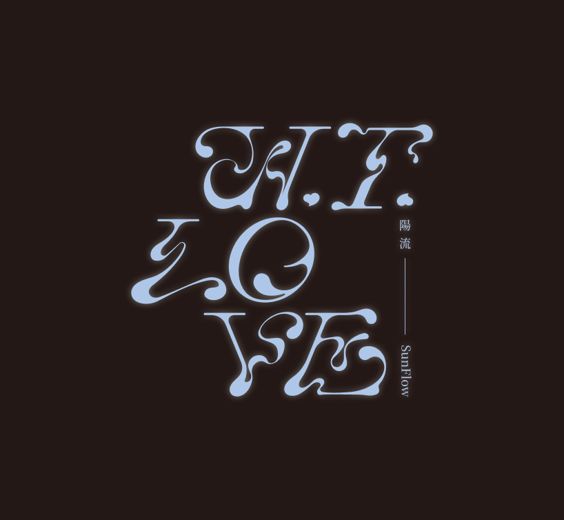

CLICK TO ENTER

其實我不太確定這算不算是一場正式的告別，或是某種情緒的總結。
這張專輯紀錄了那些沒說出口的話，還有那些在深夜裡反覆咀嚼、卻始終無法消化的瞬間。
愛情結束後，剩下的往往不是恨，而是在那之後留下來的混亂、懷疑，還有對整件事的困惑。
與其說是在思考愛情，其實更像是把那些荒謬的情緒發洩出來。
C35 M15 Y0 K0
R175 G200 B232
#AFC8E8
Our photography services include portrait, product, and event photography. We capture moments and create stunning visuals that tell your story.

這支 MV 是專輯的視覺延伸，透過影像來表達專輯中的情緒和故事。每一個畫面都經過精心設計，旨在讓觀眾更深入地體驗音樂所傳達的感受。
作詞：陽流Sunflow
作曲：陽流Sunflow
演唱：陽流Sunflow
標誌/標準字設計：施宇婕
海報設計：葉曉蓓
分鏡：吳昀蓁
主演：許紘瑋
拍攝：溫佩穎
剪輯：溫佩穎
動畫：吳昀蓁
網站：劉愛
MV製作：
江姿儀、施宇婕、劉愛、林熙蕾、吳昀蓁、許紘瑋、袁士晴、黃芙雁、彭皇喆、王凱妤、溫佩穎、葉曉蓓
道具：
江姿儀、施宇婕、劉愛、林熙蕾、吳昀蓁、許紘瑋、袁士晴、黃芙雁、彭皇喆、王凱妤、溫佩穎、葉曉蓓
客串：陽流Sunflow